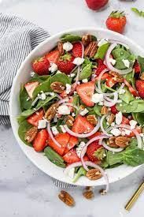

Strawberry Spinach Salad

Description
A great salad to celebrate spring and summer! This colorful salad has a variety of taste combinations and textures for
your palate and if a good source of vit C which helps enhance the absorption of iron in the spinach. If strawberries are
hard to come by use navel oranges.
Ingredients
Dressing
- ½ cup white sugar
- ½ cup olive oil
- ¼ cup distilled white vinegar
- 2 tablespoons sesame seeds
- 1 tablespoon poppy seeds
- 1 tablespoon minced onion
- ¼ teaspoon paprika
- ¼ teaspoon Worcestershire sauce
Salad
- 1 quart strawberries - cleaned, hulled and sliced
- 10 ounces fresh spinach - rinsed, dried and torn into bite-size pieces
- ¼ cup almonds, blanched and slivered
Steps
- Make dressing: Whisk together sugar, oil, vinegar, sesame seeds, poppy seeds, onion, paprika, and Worcestershire in a
medium bowl. Cover and chill for 1 hour.
- Make salad: Combine strawberries, spinach, and almonds in a large bowl.
- Pour dressing over salad; toss to coat. Refrigerate for 10 to 15 minutes before serving.